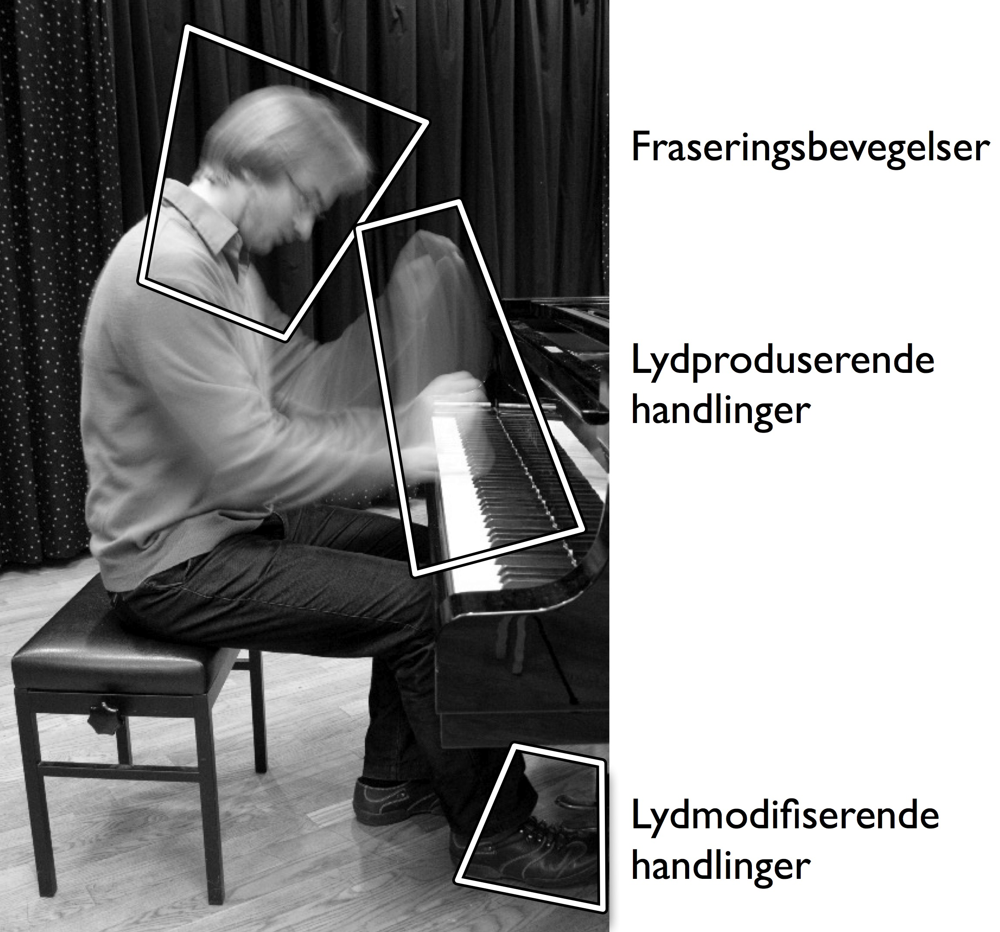
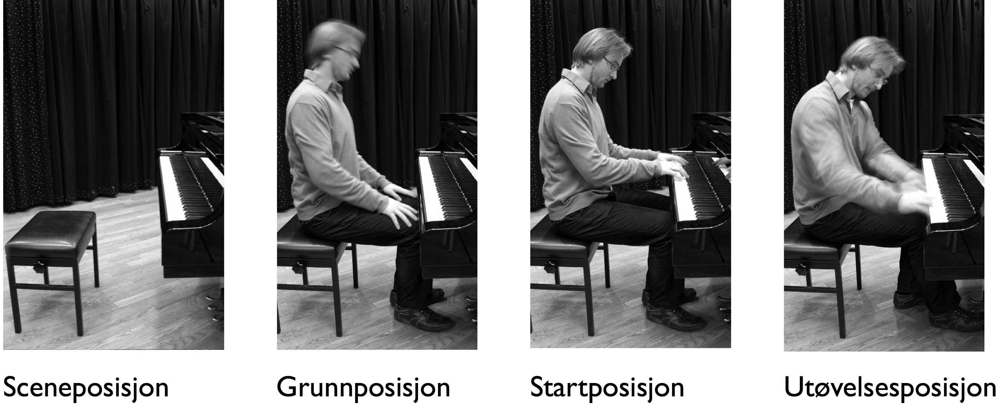
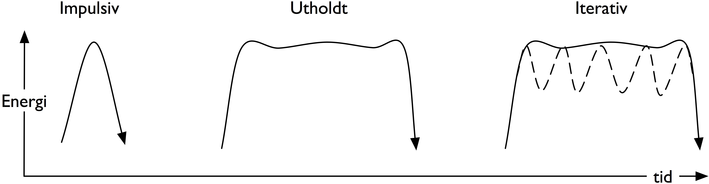
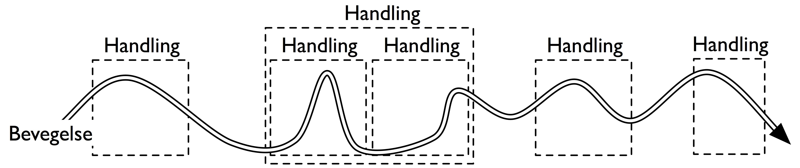
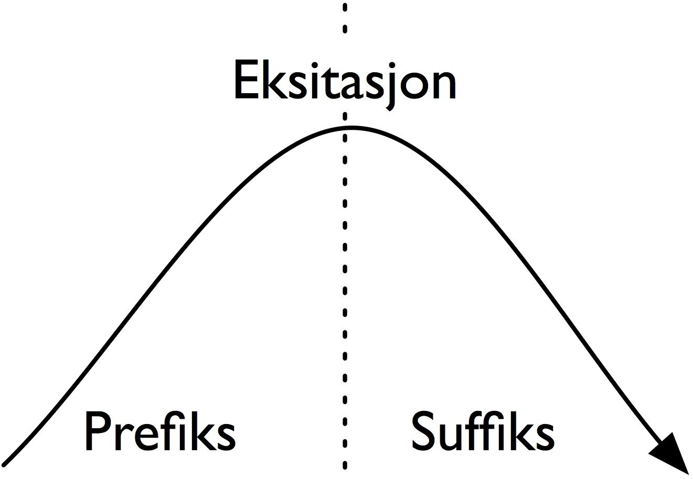
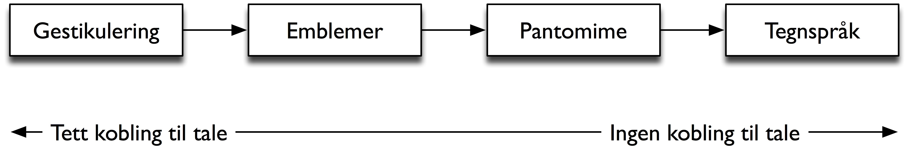

2. Kropp og bevegelse#
I dette kapitlet skal vi se nærmere på en del sentrale begreper for å forstå mer om kroppsbevegelser, blant annet kropp, rom, bevegelse, handling og gest.
Kropp#
Den norske bevegelsesforskeren Gunn Engelsrud (2006) skriver i boken Hva er kropp om hvordan kroppen kan forstås på mange forskjellige måter. Kroppen er en betydningsfull biologisk organisme som lever i en verden av andre biologiske organismer. Den er også vårt referansepunkt i møte med verden, og den påvirker måten vi opplever verden på. Samtidig er kroppen et symbol og varemerke som hele tiden utfordres av tidens trender, og som fungerer som et referansepunkt for andre som møter oss.
Kroppen er utgangspunktet for bevegelse, styrt av de mer enn 600 musklene og 200 benene kroppen er bygget opp av (Horstman 2007). Her er det ikke plass til å gå nærmere inn på kroppens oppbygning, vi vil derimot se på hvordan vi kan lage et teoretisk fundament for å studere musikk fra et kroppslig perspektiv.
Rom#
For å forstå mer av kroppens bevegelser kan vi begynne med å definere kroppens forhold til rommet der bevegelsene finner sted. Et rom kan beskrives som et sted med fysiske avgrensninger, men i denne sammenhengen brukes rom til å beskrive de mentale begrensningene som vi ofte forholder oss til. Her introduseres de tre begrepene scenerom, kroppsrom og handlingsrom.
Scenerommet er det ytre området man kan bevege seg i. Dette kan være en fysisk definert scene, slik som i en vanlig konsertsituasjon der det er bygget opp et podium der utøveren kan opptre. I en slik situasjon er det vanlig at publikum sitter rettet mot scenen, slik at den blir et naturlig oppmerksomhetsområde. Publikum har gjerne forventninger til det som kommer til å skje, og det er vanlig å klappe idet en utøver beveger seg inn på scenen. Da innser publikum at konserten er i gang, og at utøveren snart skal begynne å opptre.
Det er imidlertid ikke nødvendig med et fysisk podium for å skape opplevelsen av et scenerom der en musikalsk utøvelse kan finne sted. Hvis vi ser på scenerommet som en sosial konstruksjon mellom utøver og publikum, er det mulig å tenke seg et scenerom hvor som helst. En gatemusikant kan skape sitt eget scenerom ved å legge en hatt på bakken og invitere folk ”inn” til en musikalsk opplevelse. I dette tilfellet er scenerommet redusert til et område rundt hatten, og blir skapt i møtet mellom utøver og publikum. Størrelsen på et slikt scenerom forandrer seg gjerne over tid. Hvis en annen gatemusikant stiller seg opp i nærheten, vil ofte størrelsen på scenerommet til hver av utøverne endre seg.
Mens scenerommet er begrenset av hvor utøvelsen finner sted, er kroppsrommet begrenset av den fysiske kroppen som utøver. Koreografen og bevegelsesforskeren Rudolf Laban (1963) brukte betegnelsen kinesfære for å beskrive en virtuell boks som omringer en person, og som definerer hvor langt man kan strekke seg i alle retninger uten å flytte på føttene. På den måten beskriver kinesfæren det maksimale kroppsrommet til en utøver. Laban argumenterer for at kinesfæren er en mental konstruksjon som vi alltid bærer med oss, og som definerer hvordan vi beveger oss i forhold til våre omgivelser og de andre personene som er i vår nærhet. Hvordan man beveger seg i forhold til andre mennesker, styres også av ulike personlige og kulturelle konvensjoner som definerer hvor tett det er akseptert at man går på andre mennesker. De fleste vil kjenne et ubehag når andre mennesker kommer innenfor denne sonen, og vil reagere med å trekke seg tilbake.
Innenfor kroppsrommet kan vi snakke om flere ulike handlingsrom. Dette er virtuelle områder som definerer omfanget av bevegelsene til hele eller deler av kroppen. Handlingsrommet til musikkrelaterte bevegelser er ofte knyttet til instrumentet og de fysiske begrensningene til utøveren. Når man spiller klaver, er handlingsrommet for de lydproduserende bevegelsene i hendene definert med utgangspunkt i klaviaturet (se figur 1). Tilsvarende er handlingsrommet for de lydmodifiserende bevegelsene i føttene definert med utgangspunkt i pedalene. En fiolin åpner derimot for utførelsen av lydproduserende bevegelser på strengene og lydmodifiserende bevegelser langs halsen.
Publikums forståelse av de ulike handlingsrommene som gjelder for et instrument er med på å skape forventninger om hvilke bevegelser vi kommer til å se i utøvelsen. Hvis utøveren beveger seg utenfor det definerte handlingsrommet, kan vi bli forvirret. Tenk for eksempel på hvordan du ville reagert hvis en klassisk pianist plutselig reiste seg begynte å spille direkte på strengene under fremførelsen av 1800-tallsmusikk. Selv om et slikt handlingsrom kan forventes innenfor ny musikk, vil det ikke være konvensjon innen klassisk utøvelse. Resultatet vil være et brudd med forventningene og man vil spørre seg hva som skjer. Nettopp slike brudd med konvensjoner kan være den utløsende faktoren som skaper spenning og fornyelse i den musikalske kommunikasjonen. Musikkhistorien er full av eksempler på musikere og artister som utfordrer den tradisjonelle forståelsen av hvordan et instrument kan og bør spilles. Musikalsk nyskapning skjer nettopp når man utfordrer rammene, i dette tilfellet handlingsrommene, som brukes som rettesnor for vår forståelse av ulike bevegelsesmønstre.

Holdning, positur og posisjon#
Før vi kommer til definisjonen av bevegelse, kan det være relevant å se på noen begreper som dekker kroppens plassering og form. Her kan vi skille mellom de tre begrepene holdning, positur og posisjon. En persons holdning er knyttet til måten man fører kroppen på, for eksempel om man er rak- eller krumrygget. Ofte snakker man om at en person har en bestemt holdning, og da referer man til en statisk egenskap ved hvordan en persons kropp oppfattes.
En positur er gjerne en bevisst, tilgjort stilling hvor kroppens holdning i seg selv er meningsbærende. Positur dreier seg om kommunikasjon med kroppen uten bevegelse. Dette minner om måten gester brukes i kommunikasjon. Forskjellen er at en positur dreier seg om form og holdning til hele kroppen, mens en gest er bevegelse utført med en del av kroppen, for eksempel en hånd.
Posisjon brukes for å angi en fysisk plassering. Figur 2 viser en oversikt over forskjellige posisjoner som det er vanlig å forholde seg til i en tradisjonell konsertsituasjon. Området der musikeren står eller sitter ved utøvelse kan kalles sceneposisjon. Dette er det punktet som musikeren beveger seg til ved inngang på scenen. Når musikeren er i sceneposisjon vil vi kunne anta at utøvelsen skal begynne.
Grunnposisjon er den stillingen som handlinger vanligvis begynner og slutter i (Sacks og Schegloff 2002). I musikkutøvelse er dette gjerne den stillingen der utøveren hviler med instrumentet. Dette kan være sittende eller stående, avhengig av instrumentet som spilles. Når en musiker sitter i grunnposisjon, er alle innforstått med at utøvelsen enda ikke har begynt, men det er allikevel et tegn på at musikeren gjør seg klar til å spille. Fra grunnposisjon beveger utøveren seg til startposisjon for å begynne utøvelsen. Når utøveren er i startposisjon, er det klart for alle at utøvelsen har begynt, og man forbereder seg på at det skal oppstå lyd. Ofte ser man at utøveren utnytter denne situasjonen til å skape ekstra spenning på begynnelsen eller slutten av en utøvelse. Utøvelsesposisjonen er den posisjonen der den lydproduserende delen av utøvelsen finner sted.

Oppbygningen av en vanlig konsertsituasjon er dermed at utøveren kommer inn og plasserer seg i sceneposisjon, hviler i grunnposisjon, beveger seg til startposisjon og begynner å spille i utøvelsesposisjon. På slutten av stykket går man tilbake til startposisjon og grunnposisjon før man tar imot applaus og går ut av sceneposisjon. Selv om de ulike posisjonene kan være forskjellige fra musiker til musiker, er funksjonen de spiller av avgjørende betydning for hvordan publikum opplever utøvelsen. Dette er fordi publikums forventninger skapes av hvilken posisjon musikeren befinner seg i. Vår evne til å se disse posisjonene er ofte basert på holdning og positur snarere enn på bevegelsene vi ser. Fraværet av bevegelse kan på denne måten være like kommunikativ som bevegelse, på samme måte som stillhet kan være en effektiv kontrast til lyd.
Bevegelse#
Det er flere måter å beskrive og forstå bevegelser på. I biomekanikken brukes teori og metode fra fysikkens mekanikk for å forstå hvordan levende organismer beveger seg. Da kan en bevegelse defineres som forflytningen av et objekt i rom over tid. Bevegelser kan også forstås som en serie handlinger som følger etter hverandre, men som hver for seg danner en avgrenset enhet. Hvis man har et slikt fokus er det innholdet i handlingen som er det vesentlige, mens utførelsen av handlingen er mindre viktig. En tredje måte å studere bevegelser på er som meningsbærende enheter, eller det som gjerne kalles gester. Da er det bevegelsenes kommunikative funksjon som står i fokus. I de neste avsnittene skal vi se nærmere på disse forskjellige forståelsene av bevegelser.
I biomekanikken er det vanlig å skille mellom frivillige og ufrivillige kroppsbevegelser (Zhao 2001). Frivillige bevegelser er handlingsdrevne og målrettede og omfatter mesteparten av de store bevegelsene vi utfører i løpet av en dag, alt fra å åpne en dør til å kjøre bil eller spille piano. Ufrivillige bevegelser kan være automatiske og inkluderer mange bevegelsestyper som er nødvendige for å holde kroppen i gang, for eksempel blunking, pusting og justering av balanse. En annen type ufrivillige bevegelser er refleksbevegelser, bevegelser som ofte kommer som en automatisk respons på hendelser rundt oss. Det er de frivillige bevegelsene som kan utvikles til ferdigheter gjennom læring (Schmidt og Lee 1999), og det er denne typen bevegelser vi skal se nærmere på i resten av denne boken.
Frivillige bevegelser dekker et bredt spekter av forskjellige bevegelsestyper: enkle og komplekse, diskrete og rytmiske, langsomme og raske, med og uten et bestemt målpunkt, med og uten respons (Massion 1997). Når det gjelder bevegelsers utvikling over tid, kan vi identifisere tre hovedtyper: impulsive, utholdte og iterative som oppsummert i figur 3. De impulsive bevegelsene karakteriseres ved at de har en tydelig begynnelse og avslutning, mens de utholdte bevegelsene ofte strekker seg ut i tid og gjerne overlapper med andre bevegelser uten å ha klart definerte begynnelses- eller sluttpunkter. Iterative bevegelser er en sammenhengende serie impulsive bevegelser og kan dermed ses på som en kombinasjon av impulsive og utholdte bevegelser.

Strykebevegelser er eksempler på utholdte bevegelser der utøveren har kontinuerlig kontroll over anslaget på instrumentet. Tangent- og slagverksinstrumenter er eksempler på instrumenter hvor utøveren bruker impulsive bevegelser i utøvingen. For slike impulsive bevegelser spiller tyngdekraften en avgjørende rolle for utførelsen av bevegelsen. Når man slår på en tromme er det vanlig å løfte armen til en utgangsposisjon, for deretter å slippe trommestikken og utnytte kreftene som virker på arm og stikke på veien ned til trommen. I fallet forsøker man å bruke minimalt med energi, men lar heller tyngdekraften virke på armen. I biomekanikken diskuteres det hvorvidt denne typen bevegelser er tilnærmet ballistiske eller ikke, altså om de følger de mekaniske lovene som gjelder for objekter i fri bevegelse. Flere har argumentert med at en kroppsbevegelse ikke kan oppnå en ballistisk bane ettersom en kroppsdel henger sammen med resten av kroppen. Det har derfor vært argumentert med at impulsive bevegelser består av nær-ballistiske bevegelser med en korrigerende bevegelse på slutten av bevegelsesbanen (Rosenbaum 1991, 16). Gjennom trening og øvelse forsøker man å optimalisere den nær-ballistiske bevegelsesbanen slik at korrigeringsbanen blir så liten som mulig.
Selv om vi her snakker om forskjellige bevegelsestyper, er det viktig å huske på at de fleste naturlige bevegelser er både sammensatte og komplekse. Når man spiller et instrument, brukes ofte impulsive eller iterative fingerbevegelser, mens albue, skuldre og hode gjerne er basert på utholdte bevegelser. Vi skal se nærmere på hvordan vi kan forstå noe av denne kompleksiteten i musikkrelaterte bevegelser i kapittel 5, og i kapittel 7 skal vi se på hvordan vi kan forstå lydobjekter med utgangspunkt i de tre bevegelsestypene.
Handling#
En handling kan defineres som en målrettet bevegelsessekvens som begynner og slutter i en grunnposisjon. Handlinger har vanligvis en funksjon; man kan åpne et vindu, løfte en stol eller slå an en tangent. En handling er ofte basert på en bevegelse, men ikke alltid. Å holde fast i en veske kan være en handling selv om det ikke er bevegelse involvert.
Mens bevegelser kan forstås som kontinuerlig forflytning av objekter i rom over tid, er en handling en målrettet og tidsbegrenset del av disse kontinuerlige bevegelsene. Figur 4 er en skjematisk fremstilling av denne forskjellen mellom bevegelse og handling. Ettersom bevegelser utfolder seg i tid og rom kan de måles med forskjellige verktøy, noe vi skal se nærmere på i kapittel 3. Handlinger kan ikke på samme måte måles og beskrives objektivt. Dette er fordi en handling er basert på en subjektiv opplevelse av bevegelsene. Handlinger kan derfor bare indirekte måles gjennom bevegelser, og handlingenes funksjon må tolkes ut av bevegelsesinformasjonen.

I figur 4 er det vist at flere handlinger kan grupperes i en større handling. I pianospill kan hvert fingeranslag ses som en handling, men flere fingeranslag kan også grupperes for å beskrive en lengre handling. Avhengig av hvor detaljert bevegelsen studeres, vil det være mulig å finne flere slike handlingsnivåer. Ettersom en handling refererer til en subjektiv størrelse, kan forskjellige personer se forskjellige handlinger ut fra de samme bevegelsene.
Den britiske psykologen og gestikkforskeren Adam Kendon (2004, 111) har utviklet en modell for å beskrive hvordan en gest er bygget opp av et prefiks, en kjerne og et suffiks. Kjernen kan igjen deles inn i et slag og et etterslag. Det er slaget som er den målrettede delen av frasen, og det er gjerne den som defineres som selve ”handlingen”. Rolf Inge Godøy (2008) har foreslått at en lydproduserende handling, for eksempel å slå på en tromme, kan beskrives på samme måte. Figur 5 viser en skisse av en lydproduserende handling der det målrettede slaget kan ses som eksitasjonen av det lydproduserende objektet. I kapittel 7 skal vi se nærmere på hvordan lyd kan forstås med utgangspunkt i en slik skjematisk oppdeling av en lydproduserende handling.

Frihetsgrader#
Frihetsgrad brukes ofte for å uttrykke graden av kompleksitet i et bevegelig system, og refererer til antallet uavhengige bevegelsesmuligheter som er tilgjengelig i systemet (Rosenbaum 1991, 5). Et dørhåndtak har én bevegelig del som kan beveges i én retning, og gir da systemet én frihetsgrad. En kontorbordlampe kan ha fire frihetsgrader: hele lampen kan roteres rundt foten, den har en knekk som kan justere høyden, og selve lampehodet kan beveges opp og ned og til siden. For slike enkle mekaniske konstruksjoner er det ukomplisert å beregne antall frihetsgrader, men det blir mer komplekst når man forsøker å beregne frihetsgrader for et musikkinstrument eller for menneskekroppen. For å bevege en arm bruker vi skulderleddet, albuen og håndleddet, og hver av disse kan beveges i tre dimensjoner samt roteres i tre dimensjoner. Dette resulterer i et komplekst bevegelsessystem med mange frihetsgrader som skal koordineres ved enhver bevegelse.
En måte å beskrive menneskelig bevegelse på er ved å analysere kroppen som et biomekanisk system med et gitt antall frihetsgrader. Når vi utfører en handling, må vi også kunne kontrollere dette komplekse systemet ved å koordinere rotasjon og posisjon av de ulike leddene. Menneskekroppens handlinger kan utføres på flere forskjellige måter. Ta for eksempel en tilsynelatende enkel oppgave som det å åpne en dør. Først må armen strekkes frem for at hånden skal komme i kontakt med dørhåndtaket. Deretter må hånden gripe rundt og ta tak i håndtaket, trykke ned og skyve døren utover. Så kan døren lukkes før man kan slippe håndtaket. Selv for en slik handling er det altså en rekke forskjellige bevegelsesmuligheter, og det er ikke gitt hvilke ledd som skal flyttes, og rekkefølgen dette skal skje i. Denne utfordringen har blitt kjent som frihetsgradsproblemet (Bernstein 1967) og har i den senere tiden blitt en stor utfordring innenfor robotikk, der roboter med et stadig økende antall frihetsgrader må kunne effektivisere bevegelsesbanen.
Frihetsgradsproblemet beskriver hvordan en handling kan utføres på forskjellige måter av det samme biomekaniske systemet, for eksempel en hånd. Men det er også mulig å tenke seg at man kan utføre den samme handlingen på en annen måte. Dette er basert på ideen om at det ikke er hvordan handlingen ble utført, som er viktig, men snarere det at den ble utført. Så om man åpner en dør med høyre hånd, venstre hånd eller albuen er mindre viktig enn at døren blir åpnet. Hvis det hadde vært nødvendig, kunne vi til og med ha klart å åpne døren med en fot eller med haken. En slik form for motorekvivalens er basert på at en handling kan utføres på mange forskjellige måter, men allikevel oppnå det samme resultatet (Rosenbaum 1991, 5).
Mennesker er generelt fleksible når det kommer til å tilpasse seg stadig nye situasjoner. Dette vitner om at vår forståelse av bevegelser ofte er knyttet til en bestemt målrettet handling, mens måten vi utfører handlingen på, kan variere. Vi har stort sett heller ingen problemer med å justere bevegelsene våre slik at de passer til målet. Bare se på hvordan en togkonduktør beveger seg mellom seteradene mens toget skumper fra side til side. Her må konduktøren kontinuerlig justere bevegelsene sine for å nå det ønskede målet – å holde seg oppreist.
Musikere kan ses på som bevegelsesspesialister med høyt utviklede ferdigheter for å kontrollere komplekse bevegelsesmønstre med en så liten grad av anstrengelse som mulig (Jäncke 2006). Dette er dokumentert i kognitive studier der musikere viste en stor grad av flyt, hastighet, presisjon og nøyaktighet i bevegelsene sine (Drake og Palmer 2000). Musikerne viste også at de kan planlegge og utføre lengre og mer komplekse bevegelsesmønstre enn ikke-musikere.
Koartikulasjon#
Koartikulasjon er evnen til å kombinere flere enkeltstående handlinger til sammensatte handlinger. Begrepet kommer fra lingvistikken der det har blitt brukt for å beskrive sammensmeltingen av fonemer og ord i tale (Hardcastle og Hewlett 1999). Det samme fenomenet kan imidlertid observeres i mange andre former for bevegelse. Rumelhart og Norman (1982) viser eksempler på koartikulasjon hos personer som skriver på skrivemaskin, der de enkelte fingerbevegelsene på tastaturet kan ses som organisert innenfor mer overordnede håndbevegelser. Fingerbevegelsene organiseres etter en forventning om kommende bevegelser, der man hele tiden må planlegge og forberede seg på hva som kommer til å skje innenfor et kort tidsintervall.
Å spille skalaer eller løp på et instrument involverer stort sett alltid en form for koartikulerte bevegelser, der man forbereder seg til neste anslag før man er ferdig med det forrige. Særlig når man spiller fort, er det nødvendig å planlegge plasseringen av fingre før man spiller selve tonen. Hos pianister som spiller skalaer, ser man for eksempel hvordan tommelen legges på plass under hånden for å kunne komme raskt videre i løpet. Godøy (2004) argumenterer for at musikalsk frasering, artikulasjon og intonasjon er basert på koartikulasjon, og at dette vitner om at sammensatte og komplekse handlinger er en viktig del av vår musikkognisjon.
Gest#
I dagligtale brukes begrepet gest ofte for å beskrive håndbevegelser som blir brukt i mellommenneskelig kommunikasjon. Tommelen opp, vinking eller veiving med armene i en høylytt diskusjon er eksempler på gester, kroppsbevegelser med en meningsbærende funksjon. Hva meningen er, kan variere fra person til person og kultur til kultur. Allikevel kan vi si at det som skiller en gest fra andre typer bevegelser, er den meningsbærende rollen den spiller i kommunikasjonen. I dette avsnittet skal vi se på hvordan begrepet gest brukes i ulike sammenhenger, og hvordan disse definisjonene relaterer seg til hverandre. Vi skal også se på hvordan gester kan forstås i en musikalsk sammenheng.
Adam Kendon (2004) har definert gest som en synlig handlingsytring og knytter dermed begrepet både til en fysisk bevegelse og den meningsbærende funksjonen som denne bevegelsen har. Kendon har forsket på hvordan gester brukes i dagligtale, med særlig vekt på hvilken funksjon gestene har i tilknytning til talen. Koblingen mellom gest og tale har også vært fokuset til den amerikanske psykologen David McNeill. Han har utført en rekke observasjonsstudier der deltagerne har blitt bedt om å gjenfortelle historier. Målet har vært å studere håndbevegelser og ansiktsuttrykk, og å se på hvordan disse sameksisterer med det personene forteller. McNeills konklusjon er at de observerbare gestene ikke er tilfeldige bevegelser som akkompagnerer talen, men snarere en integrert del av kommunikasjonen.
Funn fra observasjonsstudiene ledet McNeill (1992, 12–19) til utviklingen av en klassifisering av forskjellige gestikkfunksjoner basert på de fem typene av ikke-verbal atferd som ble beskrevet av Ekman og Friesen (1969):
Ikoner representerer en bestemt egenskap ved en handling eller et objekt, og kan beskrives etter formen og utførelsen av gesten. Ikoniske gester brukes for å illustrere en handling, for eksempel å imitere banking på en dør ved å slå i luften.
Metaforer ligner på ikoniske gester, men representerer en abstrakt funksjon. Et eksempel er å holde opp hendene og si ”noe skjedde”, der gesten refererer til enheten ”noe”.
Slag forekommer sammen med tale for å understreke bestemte ord. Typiske slagbevegelser går enten opp/ned eller inn/ut, og kan tydeliggjøre poengene i talen. Slagbevegelser brukes ofte aktivt av politikere for å understreke bestemte poenger.
Peking indikerer en retningsbestemt handling, for eksempel å rette fingeren i en bestemt retning og si ”der borte”.
Emblemer er innlærte handlinger med en bestemt mening, for eksempel tommelen opp eller vinking når man sier ”ha det” til noen.
At gester sameksisterer med tale, betyr ikke at gest og tale nødvendigvis sammenfaller i tid, men snarere at de utfyller hverandre. For å beskrive gestenes forhold til talen foreslo Kendon (1982) fire forskjellige kategorier: gestikulering, emblemer, pantomime og tegnspråk. McNeill (1992, 37) videreutviklet disse til det han kalte et Kendon-kontinuum som vist i figur 6. I denne sammenhengen brukes gestikulering for å beskrive gester som alltid sammenfaller med tale. Emblemer brukes for å beskrive gester som kan sammenfalle med tale, men som ikke nødvendigvis alltid gjør det. Pantomime og tegnspråk er derimot eksempler på gester som er lingvistisk selvstendige, og hvor forståelsen av gesten kan forringes hvis de sammenfaller med tale.

Med referanse til Antonio Damiosos utsagn om at språk ikke kan skilles fra forestilling, argumenterer McNeill (2005, 15) for at mentale forestillinger er kroppsliggjort i gestenes sameksistens med tale. Dette har den amerikanske psykologen Susan Goldin-Meadow (2003) tatt videre ved å se på hvordan gester er med på å hjelpe oss å tenke. Ett av hennes funn har vært at gester ikke nødvendigvis støtter opp under tale, snarere tvert i mot. I situasjoner der folk lyver kan ansiktsuttrykk og kroppsbevegelser komme i direkte konflikt med det som sies. Hun argumenterer derfor for at studier av synlige gester kan gi viktig informasjon om våre mentale representasjoner.
Resultater fra denne forskningen på ikke-verbal kommunikasjon hos mennesker brukes nå også for å utvikle bedre kommunikasjon mellom mennesker og maskiner. Såkalt ”gestisk kontroll” av mobiltelefoner og datamaskiner er basert på ideen om at man skal kunne ta, peke, riste eller bevege seg for å styre teknologi. Målet er å kunne bruke kommunikasjonsformer som er mer naturlige for mennesker enn de alfabetbaserte eller numeriske tastaturene som i stor grad har preget vår teknologiske virkelighet det siste hundreåret. I kjølvannet av denne utviklingen har begrepet gest blitt tatt i bruk for å beskrive kommunikasjon mellom mennesker og maskiner, eller det som gjerne kalles menneske–maskin-interaksjon. I utgangspunktet burde ikke dette by på store problemer, for begrepet brukes fremdeles for å beskrive kommunikasjon mellom en ”sender” og en ”mottager”. Forskjellen ligger heller i hvordan gesten utføres. I mellommenneskelig kommunikasjon brukes gest gjerne for å beskrive tomhendte handlinger som utføres i luften i forbindelse med tale. I menneske-maskin-interaksjon har man derimot i større grad snakket om gester som er manipulative (Miranda og Wanderley 2006, 6). Manipulativ gest brukes her for å beskrive handlinger basert på fysisk kontakt med et objekt, for eksempel et tastatur.
Kan et tasteklikk på en datamaskin likestilles med en håndgest til et annet menneske? Med utgangspunkt i en definisjon av Feyereisen og de Lannoy (1991) er det mulig å se hvordan begrepet gest kan strekkes til å inkludere alle former for handlinger. I deres definisjon kan enhver bevegelse eller handling bli regnet som en gest, hvis den har en meningsbærende funksjon. En utfordring her kan være at gest-begrepet mister sin opprinnelige betydning hvis man åpner for for mange forskjellige bruksmuligheter. Dette har til en viss grad skjedd, og det er stadig oftere vanlig å se at gest brukes mer eller mindre synonymt med ”bevegelse” eller ”handling”.
Det finnes også eksempler på definisjoner innen menneske–maskin-interaksjon som argumenterer for at det er hva som blir kommunisert til maskinen, som er det essensielle, ikke hvordan. I en diskusjon om tastetrykk argumenterer Kurtenbach og Hulteen (1990, 310) for at fingerens vei ned til tasten ikke er en gest, ettersom denne handlingen hverken blir observert eller registrert av maskinen. Deres konklusjon er at det eneste som betyr noe i kommunikasjonen mellom menneske og maskin, er hvilken tast som ble trykket ned. En slik definisjon er dermed snevrere enn det vi er vant med fra mellommenneskelig kommunikasjon, der den meningsbærende komponenten til en gest ofte er knyttet til måten gesten utføres på.
Nyere forskning innen menneske–maskin-interaksjon fokuserer i større grad på å lage systemer som tilpasser seg, og etterligner, menneskelig kommunikasjon. Utfordringen er å utvikle sensorløsninger som kan registrere komplekse menneskelige bevegelser. Et begrep som ofte trekkes frem i denne sammenhengen, er ekspressive gester. Her er ideen at den meningsbærende komponenten overføres nettopp gjennom opplevelsen av ekspressivitet i bevegelse eller lyd (Camurri et al. 2001). En rekke forskningsgrupper arbeider nå med å forstå hvordan man kan få datamaskiner til både å gjenkjenne og å gjenskape menneskelig ekspressivitet.
Gest har også blitt tatt i bruk innenfor musikkforskningen i de senere årene. Noen bruker begrepet musikalsk gest for å beskrive musikkrelaterte bevegelser, altså de fysiske bevegelsene som utføres av utøver eller publikum. Et eksempel på dette finnes i en studie av kroppsbevegelsene til pianisten Glenn Gould (Delalande 1988). Andre bruker musikalsk gest for å beskrive opplevde bevegelser i musikken, slik som Wendy Allanbrooks (1986) studier av rytmiske gester i Mozart. Dette minner om måten populærmusikkforskeren Richard Middleton (1993) argumenterer for at musikalsk lyd kan forstås som bevegelige former som minner om fysiske gester. Mens Allanbrook og Middleton bruker gest-begrepet for å forklare opplevelsen av rytme, fokuserer den amerikanske musikkteoretikeren Robert Hatten (2004) på hvordan melodilinjer kan oppleves som gester. Han utvikler en metode for å analysere slike musikalske gester med utgangspunkt i tradisjonell musikkteori og partiturer. Det er altså stor bredde i definisjonene av musikalske gester, men de fleste refererer til en eller annen form for menneskelig bevegelse, enten direkte eller indirekte gjennom noter og lyd.
Det som ser ut til å gå som en rød tråd gjennom de fleste av definisjonene av gest som er beskrevet i dette avsnittet, er at det ligger en eller aller annen form for kommunikasjon til grunn for bruken av begrepet. Denne kommunikasjonen er gjerne også knyttet til bevegelse. Hva slags bevegelse det er snakk om, eller hvor meningsdannelsen skjer, varierer derimot fra definisjon til definisjon.
Sammendrag#
Kapitlet begynte med å presentere hvordan vår opplevelse av forskjellige rom har en betydning for de begrensningene vi legger i handlingsutøvelse. Scenerom er området der utøvelse finner sted. Kroppsrom er det området som kan dekkes når man strekker seg i alle retninger. Handlingsrom er de områdene hvor forskjellige handlinger utfolder seg. Opplevelsen av disse rommene er subjektiv, og forandrer seg over tid. De spiller allikevel en viktig rolle i å forberede oss mentalt på hvor handling kan finne sted.
Holdning, positur og posisjon beskriver på forskjellig måte egenskaper ved kroppens fremtreden. Holdning er knyttet til ubevisst kroppsføring, mens positur beskriver den bevisste kroppsføringen. Posisjon beskriver forskjellige stillinger som er vanlige i musikkutøvelse: sceneposisjon, grunnposisjon, startposisjon og utøvelsesposisjon. Posisjonen som en utøver inntar er med på å skape forventning hos publikum.
Bevegelse brukes for å beskrive forflytning av en kroppsdel eller et objekt i rom over tid. Handling er en målrettet bevegelsessekvens som er begrenset i tid og rom. Gest beskriver forskjellige former for kroppsbevegelser som har en meningsbærende funksjon. Gester er subjektive og kulturelt betinget.
Frihetsgrader refererer til antall bevegelige ledd i en kropp, og sier noe om kompleksiteten i systemet. Motorekvivalens brukes for å beskrive hvordan ulike bevegelsesmønstre kan brukes for å utføre den samme handlingen. Koartikulasjon brukes for å beskrive hvordan flere enkelthandlinger kan kombineres til større, sammensatte handlinger.
Les mer#
kropp og bevegelse: Engelsrud (2006)
bevegelsesvitenskap: Abernethy et al. (2005)
gester: McNeill (2005)